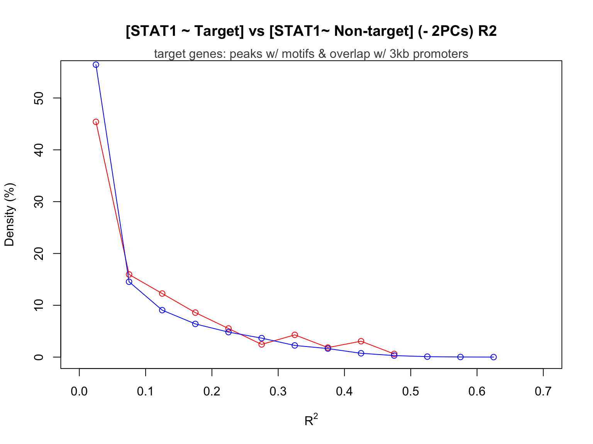

HBB-TF Regression Analysis
Yifan Zhou
Load Data
We choose whole blood as the tissue of interest for preliminary analysis.
Load tissue-specific (whole blood) gene expression tpm data extracted from GTEx v7 GTEx_Analysis_2016-01-15_v7_RNASeQCv1.1.8_gene_tpm.gct, and do normalization:
load('~/Downloads/Research/GTEx/blood_gene_exp_norm.Rdata')Load data from ‘tissue-specific circuits’ paper (blood_adult.txt from [394 individual networks] http://regulatorycircuits.org/download.html):
blood_TF_gene <- read.delim(file = '~/Downloads/Research/GTEx/blood_adult_TF_gene.txt',
sep = '\t', header = FALSE, stringsAsFactors = FALSE) HBB and its Associated TFs
We choose HBB, a gene that encodes haemoglobin subunit beta as a target gene of interest to analyze the association of HBB expression level with the expression levels of putative TFs linked to HBB:
HBB <- blood_TF_gene[which(blood_TF_gene[,2]=='HBB'),]
HBB <- HBB[order(HBB[,3],decreasing = TRUE),]
HBB_TF_names<- HBB[,1]Putative TF list for gene HBB:
as.character(HBB_TF_names) [1] "KLF4" "CACD" "GATA3" "GATA4" "GATA5" "RAR" "HF1H3B"
[8] "SP1" "ZBTB33" "GATA6" "ATF2" "GTF2I" "NFIC" "NFIL3"
[15] "HNF4A" "GMEB2" Search for these 16 TFs in the GTEx gene expression list:
for (i in HBB_TF_names){
print(blood_gene_exp_norm$Description[startsWith(blood_gene_exp_norm$Description, as.character(i))] )
}[1] "KLF4"
character(0)
[1] "GATA3-AS1" "GATA3"
[1] "GATA4"
[1] "GATA5"
[1] "RARB" "RARRES2P1" "RARRES1" "RARRES2P4" "RARS"
[6] "RARS2" "RARRES2" "RARRES2P2" "RARRES3" "RARG"
[11] "RARRES2P5" "RARRES2P6" "RARRES2P9" "RARRES2P7" "RARRES2P8"
[16] "RARA" "RARRES2P3"
character(0)
[1] "SP110" "SP140" "SP140L" "SP100" "SP1"
[1] "ZBTB33"
[1] "GATA6-AS1" "GATA6"
[1] "ATF2"
[1] "GTF2IRD1P1" "GTF2IRD2P1" "GTF2IRD1" "GTF2I" "GTF2IRD2"
[6] "GTF2IRD2B" "GTF2IP1" "GTF2IP3" "GTF2IP2"
[1] "NFIC"
[1] "NFIL3"
[1] "HNF4A"
[1] "GMEB2"3 TFs, CACD, RAR, and HF1H3B, cannot be found in GTEx.
Extract expression data of the rest 13 TFs that are available in GTEx:
HBB_TF_names <- HBB_TF_names[c(1,3,4,5,8:16)]
n = 13
HBB_TF_exp <- data.frame(matrix(nrow = 407, ncol = n))
for (i in c(1:n)){
HBB_TF_exp[,i] <- t(blood_gene_exp_norm[which(blood_gene_exp_norm$Description
==as.character(HBB_TF_names[i])),-1])
}
HBB_exp <- blood_gene_exp_norm[which(blood_gene_exp_norm$Description=='HBB'),-1]
HBB_TF_exp <- cbind(HBB_TF_exp,t(HBB_exp))
colnames(HBB_TF_exp) <- c(HBB_TF_names,'HBB')
row.names(HBB_TF_exp) <- colnames(blood_gene_exp_norm)[-1]Linear Regression
Multiple linear regression on all 13 TFs:
fit_all_HBB <- lm(HBB ~ ., data = HBB_TF_exp)
summary(fit_all_HBB)
Call:
lm(formula = HBB ~ ., data = HBB_TF_exp)
Residuals:
Min 1Q Median 3Q Max
-0.222574 -0.055046 0.001484 0.051732 0.224473
Coefficients:
Estimate Std. Error t value Pr(>|t|)
(Intercept) 5.310e-01 9.783e-03 54.279 < 2e-16 ***
KLF4 1.782e+03 3.680e+02 4.842 1.85e-06 ***
GATA3 -1.752e+03 1.093e+03 -1.602 0.1099
GATA4 -4.962e+04 3.735e+04 -1.329 0.1848
GATA5 5.630e+03 3.789e+04 0.149 0.8819
SP1 -1.950e+03 2.925e+02 -6.667 8.88e-11 ***
ZBTB33 4.463e+03 3.401e+03 1.312 0.1902
GATA6 -3.088e+04 1.330e+04 -2.322 0.0207 *
ATF2 -2.579e+03 2.181e+03 -1.183 0.2377
GTF2I -1.818e+03 2.517e+03 -0.723 0.4704
NFIC -9.473e+03 1.883e+03 -5.031 7.42e-07 ***
NFIL3 -3.714e+01 3.313e+01 -1.121 0.2630
HNF4A -2.238e+04 1.179e+04 -1.898 0.0584 .
GMEB2 -8.123e+03 1.119e+03 -7.262 2.06e-12 ***
---
Signif. codes: 0 '***' 0.001 '**' 0.01 '*' 0.05 '.' 0.1 ' ' 1
Residual standard error: 0.07884 on 393 degrees of freedom
Multiple R-squared: 0.7077, Adjusted R-squared: 0.698
F-statistic: 73.18 on 13 and 393 DF, p-value: < 2.2e-16Forward Selection
[1] "GMEB2"After the first predictor GMEB2 is selected, add rest of the predictors one at a time until none of their p-values are significant (p value > 0.05).
stats <- data.frame(GMEB2 = c(min_pval,r_sq),row.names = c("p-val","R-squared"))
fit <- lm(as.formula(paste0(response_str,names(min_pval))), data=df)
R <- R[-which(R == names(min_pval))] # The rest of the predictors
nonstop = TRUE
while(nonstop){
pval <- rep(NA,length(R)); names(pval) <- R
R_sq <- rep(NA,length(R)); names(R_sq) <- R
for(j in R){
fit_loop <- update(fit, as.formula(paste0(".~. +",j)))
fitsum <- summary(fit_loop)
pval[j] <- fitsum$coefficients[j,4]
R_sq[j] <- fitsum$r.squared
}
min_pval <- pval[which(pval == min(pval))]
r_sq <- R_sq[which(pval == min(pval))]
if(min_pval < 0.05){
stats[,names(min_pval)] <- c(min_pval,r_sq)
fit <- update(fit, as.formula(paste0(".~. +",names(min_pval))))
R <- R[-which(R == names(min_pval))]
}
else{
nonstop = FALSE
forward_model <- fit
}
}
rm(list = 'fit_loop')The p-value and \(R^2\) statistic for each of the significant predictors added at each round of selection:
stats GMEB2 SP1 GATA6 NFIC KLF4
p-val 6.496898e-66 2.329434e-29 1.261419e-05 0.0009530469 1.268444e-06
R-squared 5.165987e-01 6.467329e-01 6.630782e-01 0.6721155521 6.907782e-01
HNF4A NFIL3 GATA3
p-val 0.003112527 0.01712368 0.04037568
R-squared 0.697469941 0.70175418 0.70489036Summary of the selected model:
summary(forward_model)
Call:
lm(formula = HBB ~ GMEB2 + SP1 + GATA6 + NFIC + KLF4 + HNF4A +
NFIL3 + GATA3, data = df)
Residuals:
Min 1Q Median 3Q Max
-0.223088 -0.054531 0.002897 0.052857 0.228688
Coefficients:
Estimate Std. Error t value Pr(>|t|)
(Intercept) 5.290e-01 9.682e-03 54.640 < 2e-16 ***
GMEB2 -7.945e+03 1.101e+03 -7.217 2.71e-12 ***
SP1 -2.015e+03 2.323e+02 -8.675 < 2e-16 ***
GATA6 -3.739e+04 9.398e+03 -3.978 8.24e-05 ***
NFIC -9.457e+03 1.807e+03 -5.235 2.68e-07 ***
KLF4 1.747e+03 3.473e+02 5.031 7.41e-07 ***
HNF4A -2.879e+04 1.063e+04 -2.707 0.00708 **
NFIL3 -6.397e+01 2.747e+01 -2.328 0.02040 *
GATA3 -1.808e+03 8.792e+02 -2.057 0.04038 *
---
Signif. codes: 0 '***' 0.001 '**' 0.01 '*' 0.05 '.' 0.1 ' ' 1
Residual standard error: 0.07871 on 398 degrees of freedom
Multiple R-squared: 0.7049, Adjusted R-squared: 0.699
F-statistic: 118.8 on 8 and 398 DF, p-value: < 2.2e-16plot(as.matrix(stats)[2,], pch=16, xlab="Number of Predictors",ylab = "R_2")Check the normality assumption:
par(mfrow=c(1,2))
hist(forward_model$residuals)
qqnorm(forward_model$residuals,pch=16)
qqline(forward_model$residuals,col='red')Bayesian Information Criterion (BIC)
library(leaps)
RSS <- summary(regsubsets(HBB ~., HBB_TF_exp))
n <- dim(HBB_TF_exp)[1]
p <- length(RSS$rss)+1
BIC <- n*log(RSS$rss/n) + log(n)*c(2:p)
plot(BIC,xlab='Number of Predictors', pch=16)
BIC is maximized when the following 6 predictors are used:
BIC_predictors <- RSS$which[6,RSS$which[6,]]
BIC_predictors <- names(BIC_predictors)[-1]
BIC_predictors[1] "KLF4" "SP1" "GATA6" "NFIC" "HNF4A" "GMEB2"BIC selected model:
BIC_model <- lm(HBB ~ KLF4 + SP1 + GATA6 + NFIC + HNF4A + GMEB2, data = HBB_TF_exp)
summary(BIC_model)
Call:
lm(formula = HBB ~ KLF4 + SP1 + GATA6 + NFIC + HNF4A + GMEB2,
data = HBB_TF_exp)
Residuals:
Min 1Q Median 3Q Max
-0.224867 -0.056064 0.001213 0.051060 0.236599
Coefficients:
Estimate Std. Error t value Pr(>|t|)
(Intercept) 5.207e-01 9.405e-03 55.365 < 2e-16 ***
KLF4 1.659e+03 3.381e+02 4.905 1.36e-06 ***
SP1 -1.851e+03 2.092e+02 -8.849 < 2e-16 ***
GATA6 -4.451e+04 9.057e+03 -4.914 1.30e-06 ***
NFIC -9.730e+03 1.822e+03 -5.339 1.57e-07 ***
HNF4A -3.168e+04 1.065e+04 -2.974 0.00311 **
GMEB2 -9.351e+03 9.422e+02 -9.924 < 2e-16 ***
---
Signif. codes: 0 '***' 0.001 '**' 0.01 '*' 0.05 '.' 0.1 ' ' 1
Residual standard error: 0.0795 on 400 degrees of freedom
Multiple R-squared: 0.6975, Adjusted R-squared: 0.6929
F-statistic: 153.7 on 6 and 400 DF, p-value: < 2.2e-16Normality assumption
par(mfrow=c(1,2))
hist(BIC_model$residuals)
qqnorm(BIC_model$residuals,pch=16)
qqline(BIC_model$residuals,col='red')Negative Controls
\(R^2\)s from the control models:
hist(R_sq_HBB, main = 'Distribution of R_sq of Control Models')
summary(R_sq_HBB) Min. 1st Qu. Median Mean 3rd Qu. Max.
0.00000 0.00000 0.00000 0.01566 0.00000 0.81316